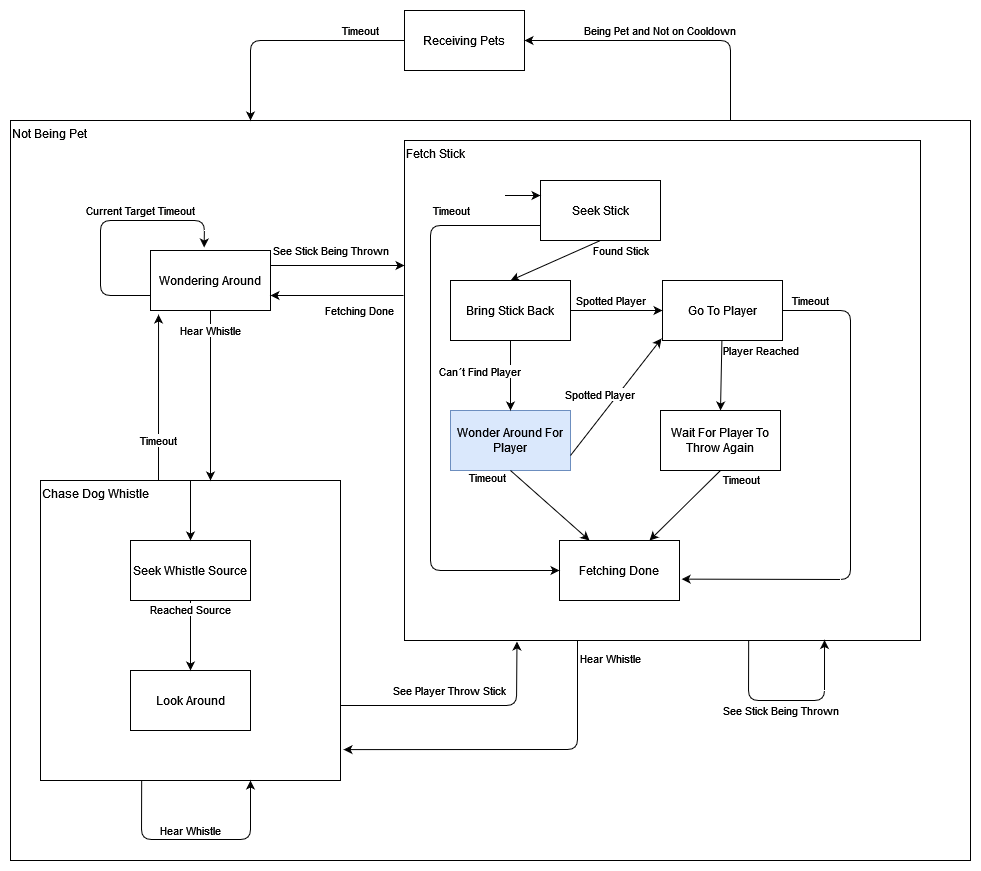

Home

 Masks Out was made in Unity for the Game Design course. There was the plague upon the land and thus we were given the theme of "Masks".
This game is an isometric stealth game. You can throw rocks to distract guards, and use your companion dog to do the same.
I did most of the programming work. From the shader that hid buildings in front of the player, to buttons and doors logic.
But by far my favourite element I made is the AIs, both for the patrolling guards and the companion dog. On the right is the state machine controlling the dog. It can play fetch!